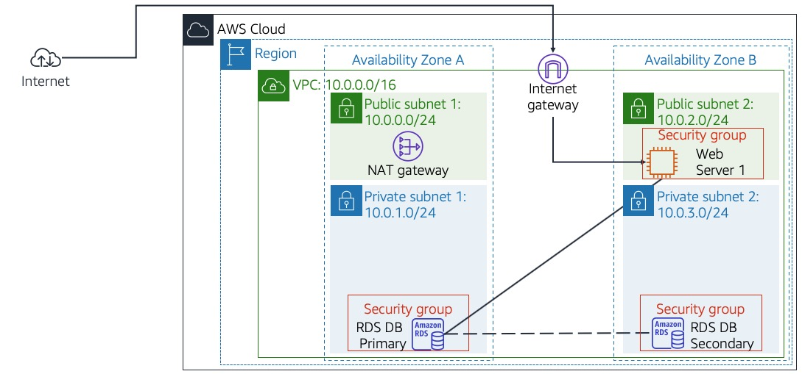
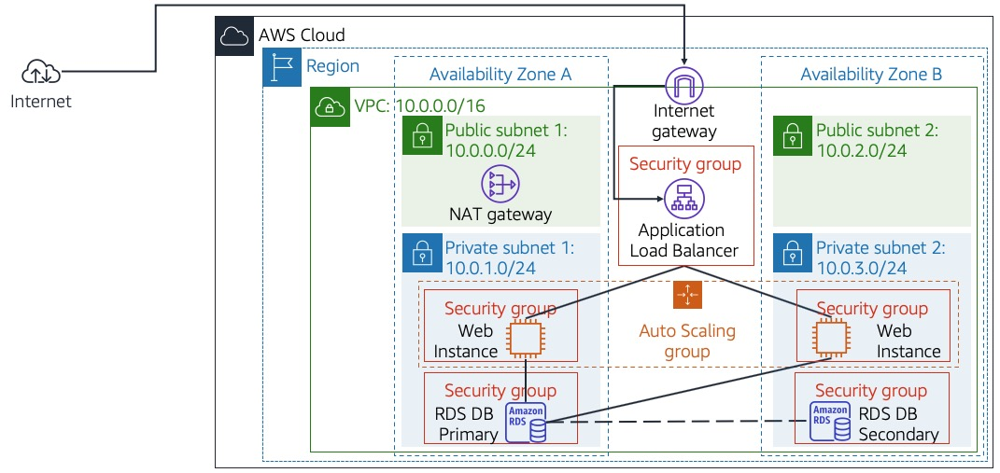

This lab walks you through using the Elastic Load Balancing (ELB) and Auto Scaling services to load balance and automatically scale your infrastructure.
Elastic Load Balancing automatically distributes incoming application traffic across multiple Amazon EC2 instances. It enables you to achieve fault tolerance in your applications by seamlessly providing the required amount of load balancing capacity needed to route application traffic.
Auto Scaling helps you maintain application availability and allows you to scale your Amazon EC2 capacity out or in automatically according to conditions you define. You can use Auto Scaling to help ensure that you are running your desired number of Amazon EC2 instances. Auto Scaling can also automatically increase the number of Amazon EC2 instances during demand spikes to maintain performance and decrease capacity during lulls to reduce costs. Auto Scaling is well suited to applications that have stable demand patterns or that experience hourly, daily, or weekly variability in usage.
Objectives
After completing this lab, you can:
Duration
This lab takes approximately 45 minutes.
Scenario
You start with the following infrastructure:

The final state of the infrastructure is:

At the top of these instructions, click Start Lab to launch your lab.
Tip: If you need more time to complete the lab, then restart the timer for the environment by choosing the Start Lab button again.
Lab resources will be displayed on the top left corner.
Example:
Please wait for the lab to be ready, before proceeding.
At the top of these instructions, click AWS
This will open the AWS Management Console in a new browser tab. The system will automatically log you in.
Tip: If a new browser tab does not open, there will typically be a banner or icon at the top of your browser indicating that your browser is preventing the site from opening pop-up windows. Click on the banner or icon and choose "Allow pop ups."
Arrange the AWS Management Console tab so that it displays along side these instructions. Ideally, you will be able to see both browser tabs at the same time, to make it easier to follow the lab steps.
Do not change the lab region unless specifically instructed to do so.
In this task, you will create an AMI from the existing Web Server 1. This will save the contents of the boot disk so that new instances can be launched with identical content.
In the AWS Management Console, select the Services menu, and then select EC2 under Compute.
In the left navigation pane, click Instances.
First, you will confirm that the instance is running.
Wait until the Status Checks for Web Server 1 displays 2/2 checks passed. Click refresh to update.
Proceeding before the instance is ready, would result in lab failure. You will now create an AMI based upon this instance.
Select Web Server 1.
In the Actions menu, click Image and templates > Create image, then configure:
Web Server AMILab AMI for Web ServerClick Create image
The confirmation screen displays the AMI ID for your new AMI.
Click Close
You will use this AMI when launching the Auto Scaling group later in the lab.
In this task, you will create a load balancer that can balance traffic across multiple EC2 instances and Availability Zones.
In the left navigation pane, click Load Balancers.
Click Create Load Balancer
Several different types of load balancer are displayed. You will be using an Application Load Balancer that operates at the request level (layer 7), routing traffic to targets — EC2 instances, containers, IP addresses and Lambda functions — based on the content of the request. For more information, see: Comparison of Load Balancers
Under Application Load Balancer click Create and configure:
LabELBThis configures the load balancer to operate across multiple Availability Zones.
Click Next: Configure Security Settings
You can ignore the "Improve your load balancer's security." warning.
Click Next: Configure Security Groups
A Web Security Group has already been created for you, which permits HTTP access.
Select Web Security Group and deselect default.
Click Next: Configure Routing
Routing configures where to send requests that are sent to the load balancer. You will create a Target Group that will be used by Auto Scaling.
For Name, enter: LabGroup
Click Next: Register Targets
Auto Scaling will automatically register instances as targets later in the lab.
Click Next: Review
Click Create then click Close
The load balancer will show a state of provisioning. There is no need to wait until it is ready. Please continue with the next task.
In this task, you will create a launch template for your Auto Scaling group. A launch template is a template that an Auto Scaling group uses to launch EC2 instances. When you create a launch template, you specify information for the instances such as the AMI, the instance type, a key pair, security group and disks.
In the left navigation pane, click Launch Templates.
Click Create launch template
Configure these settings:
Launch template name: LabTemplate
AMI: Web Server AMI
Instance type: t3.micro.
Key pair name: vockey.
Security groups: Web Security Group. Make sure the security group belongs to Lab VPC.
Expand Advanced details and in the Detailed CloudWatch monitoring menu, select Enable
This will capture metrics at 1-minute intervals, which allows Auto Scaling to react quickly to changing usage patterns.
Click Create launch template followed by View launch templates
You will now create an Auto Scaling group that uses this Launch Template.
Select LabTemplate and then in the Actions menu, select Create Auto Scaling group
Configure the following settings:
Auto Scaling group name: Lab Auto Scaling Group
Click Next
Network: Lab VPC
Subnet: Select Private Subnet 1 (10.0.1.0/24) and Private Subnet 2 (10.0.3.0/24)
Click Next
Load balancing - optional
Existing load balancer target groups LabGroup
Monitoring: Select Enable group metrics collection within CloudWatch.
This will capture metrics at 1-minute intervals, which allows Auto Scaling to react quickly to changing usage patterns.
Click Next
Group size: Enter the below values
2 2 4 This will allow Auto Scaling to automatically add/remove instances, always keeping between 2 and 4 instances running.
Scaling policies - optional
60This tells Auto Scaling to maintain an average CPU utilization across all instances at 60%. Auto Scaling will automatically add or remove capacity as required to keep the metric at, or close to, the specified target value. It adjusts to fluctuations in the metric due to a fluctuating load pattern.
Click Next
Click Next again on the Add notifications section.
Add tags: click Add tag and enter
NameLab InstanceClick Next
Finally click Create Auto Scaling group
This will launch EC2 instances in private subnets across both Availability Zones.
Your Auto Scaling group will initially show an instance count of zero, but new instances will be launched to reach the Desired count of 2 instances. Note: If you experience an error related to the t3.micro instance type not being available, then rerun this task by selecting t2.micro instead.
In this task, you will verify that Load Balancing is working correctly.
In the left navigation pane, click Instances.
You should see two new instances named Lab Instance. These were launched by Auto Scaling.
If the instances or names are not displayed, wait 30 seconds and click refresh in the top-right.
First, you will confirm that the new instances have passed their Health Check.
In the left navigation pane, click Target Groups (in the Load Balancing section).
Click LabGroup followed by the Targets tab.
Two Lab Instance targets should be listed for this target group.
Wait until the Status of both instances transitions to healthy. Click Refresh in the upper-right to check for updates.
Healthy indicates that an instance has passed the Load Balancer's health check. This means that the Load Balancer will send traffic to the instance.
You can now access the Auto Scaling group via the Load Balancer.
In the left navigation pane, click Load Balancers.
In the lower pane, copy the DNS name of the load balancer, making sure to omit "(A Record)".
It should look similar to: LabELB-1998580470.us-west-2.elb.amazonaws.com
Open a new web browser tab, paste the DNS Name you just copied, and press Enter.
The application should appear in your browser. This indicates that the Load Balancer received the request, sent it to one of the EC2 instances, then passed back the result.
You created an Auto Scaling group with a minimum of two instances and a maximum of four instances. Currently two instances are running because the minimum size is two and the group is currently not under any load. You will now increase the load to cause Auto Scaling to add additional instances.
Return to the AWS management console, but do not close the application tab — you will return to it soon.
In the AWS Management Console, select the Services menu, and then select CloudWatch under Management & Governance.
In the left navigation pane, click Alarms (not ALARM).
Two alarms will be displayed. These were created automatically by the Auto Scaling group. They will automatically keep the average CPU load close to 60% while also staying within the limitation of having two to six instances.
Click the OK alarm, which has AlarmHigh in its name.
If no alarm is showing OK, wait a minute then click refresh in the top-right until the alarm status changes.
The OK indicates that the alarm has not been triggered. It is the alarm for CPU Utilization > 60, which will add instances when average CPU is high. The chart should show very low levels of CPU at the moment.
You will now tell the application to perform calculations that should raise the CPU level.
Return to the browser tab with the web application.
Click Load Test beside the AWS logo.
This will cause the application to generate high loads. The browser page will automatically refresh so that all instances in the Auto Scaling group will generate load. Do not close this tab.
Return to browser tab with the CloudWatch console.
In less than 5 minutes, the AlarmLow alarm should change to OK and the AlarmHigh alarm status should change to ALARM.
You can click Refresh in the top-right every 60 seconds to update the display.
You should see the AlarmHigh chart indicating an increasing CPU percentage. Once it crosses the 60% line for more than 3 minutes, it will trigger Auto Scaling to add additional instances.
Wait until the AlarmHigh alarm enters the ALARM state.
You can now view the additional instance(s) that were launched.
In the AWS Management Console, select the Services menu, and then select EC2 under Compute.
In the left navigation pane, click Instances.
More than two instances labeled Lab Instance should now be running. The new instance(s) were created by Auto Scaling in response to the Alarm.
In this task, you will terminate Web Server 1. This instance was used to create the AMI used by your Auto Scaling group, but it is no longer needed.
Congratulations! You have completed the lab.
Choose End Lab at the top of this page, and then select Yes to confirm that you want to end the lab.
A panel indicates that DELETE has been initiated... You may close this message box now.
A message Ended AWS Lab Successfully is briefly displayed, indicating that the lab has ended.
For more information about AWS Training and Certification, see https://aws.amazon.com/training/. Your feedback is welcome and appreciated. If you would like to share any suggestions or corrections, please provide the details in our AWS Training and Certification Contact Form. © 2022 Amazon Web Services, Inc. and its affiliates. All rights reserved. This work may not be reproduced or redistributed, in whole or in part, without prior written permission from Amazon Web Services, Inc. Commercial copying, lending, or selling is prohibited.